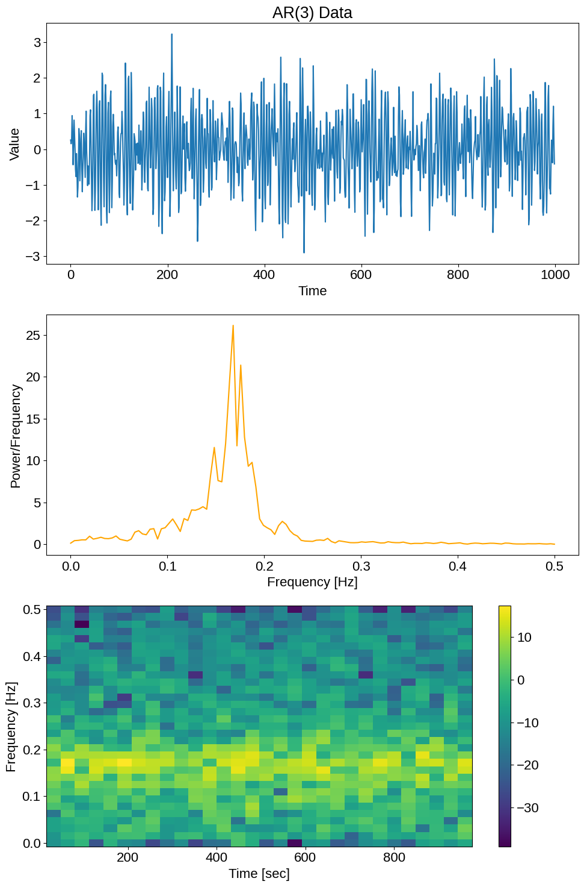
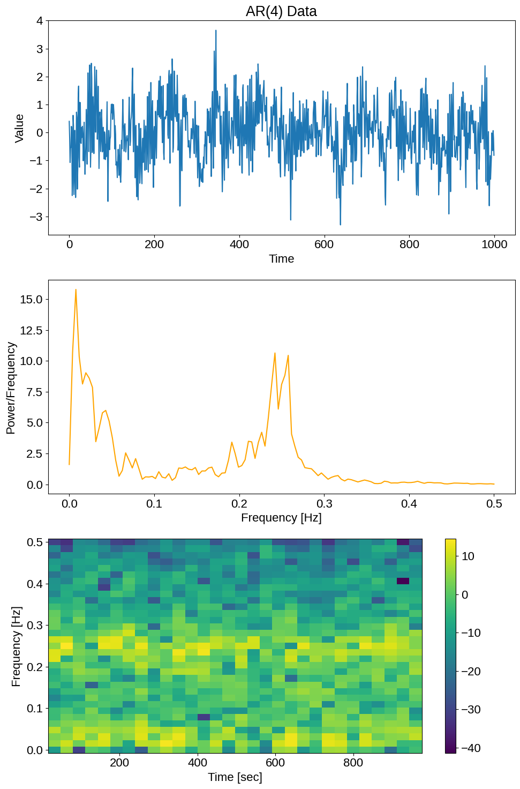

%matplotlib inline
%load_ext autoreload
# ! pip install git+https://github.com/avivajpeyi/pspline_psd.git -q
Example: AR process#
First, lets generate some data from an AR process and plot it.
import matplotlib.pyplot as plt
import numpy as np
from scipy.fft import fft
from slipper.example_datasets.ar_data import generate_ar_timeseries, plot_ar_spectrogram_psd
from slipper.sample.spline_model_sampler import fit_data_with_pspline_model
from slipper.plotting import set_plotting_style
from slipper.fourier_methods import get_periodogram
from slipper.plotting.plot_spline_model_and_data import plot_spline_model_and_data
np.random.seed(42)
set_plotting_style()
N_TOTAL_MCMC_STEPS = 500
---------------------------------------------------------------------------
ModuleNotFoundError Traceback (most recent call last)
Cell In[2], line 3
1 import matplotlib.pyplot as plt
2 import numpy as np
----> 3 from scipy.fft import fft
4 from slipper.example_datasets.ar_data import generate_ar_timeseries, plot_ar_spectrogram_psd
5 from slipper.sample.spline_model_sampler import fit_data_with_pspline_model
ModuleNotFoundError: No module named 'scipy'
Example 1: AR(3)#
data = generate_ar_timeseries(order=3, n_samples=1000)
fig = plot_ar_spectrogram_psd(data, title='AR(3) Data')

pdgrm = get_periodogram(timeseries=data)
mcmc = fit_data_with_pspline_model(
data=pdgrm, Ntotal=N_TOTAL_MCMC_STEPS, degree=3,
eqSpaced=True, n_checkpoint_plts=10
)
fig = mcmc.make_summary_plot()
|Slipper|21/08 18:21:03|WARNING| Checkpoint plotting is enabled. This will slow down the sampling process.
|Slipper|21/08 18:21:03|INFO| Running sampler with the following arguments:
Sampler arguments:
{'Ntotal': 500,
'burnin': 166,
'n_checkpoint_plts': 10,
'thin': 1,
'δα': 0.0001,
'δβ': 0.0001,
'τα': 0.001,
'τβ': 0.001,
'φα': 1,
'φβ': 1}
Spline arguments:
{'degree': 3, 'diffMatrixOrder': 2, 'eqSpaced': True, 'k': 30}
|Slipper|21/08 18:21:03|INFO| <<Plotting checkpoint>>
|Slipper|21/08 18:21:04|INFO| <<Plotting checkpoint>>
|Slipper|21/08 18:21:04|INFO| <<Plotting checkpoint>>
|Slipper|21/08 18:21:05|INFO| <<Plotting checkpoint>>
|Slipper|21/08 18:21:06|INFO| <<Plotting checkpoint>>
|Slipper|21/08 18:21:06|INFO| <<Plotting checkpoint>>
|Slipper|21/08 18:21:07|INFO| <<Plotting checkpoint>>
|Slipper|21/08 18:21:08|INFO| <<Plotting checkpoint>>
|Slipper|21/08 18:21:09|INFO| <<Plotting checkpoint>>
|Slipper|21/08 18:21:11|INFO| <<Creating gif>>
---------------------------------------------------------------------------
FileNotFoundError Traceback (most recent call last)
File ~/venv/lib/python3.8/site-packages/pygifsicle/pygifsicle.py:76, in gifsicle(sources, destination, optimize, colors, options)
75 try:
---> 76 subprocess.call(["gifsicle", *options, *sources, "--colors",
77 str(colors), "--output", destination])
78 except FileNotFoundError:
File /usr/lib/python3.8/subprocess.py:340, in call(timeout, *popenargs, **kwargs)
333 """Run command with arguments. Wait for command to complete or
334 timeout, then return the returncode attribute.
335
(...)
338 retcode = call(["ls", "-l"])
339 """
--> 340 with Popen(*popenargs, **kwargs) as p:
341 try:
File /usr/lib/python3.8/subprocess.py:858, in Popen.__init__(self, args, bufsize, executable, stdin, stdout, stderr, preexec_fn, close_fds, shell, cwd, env, universal_newlines, startupinfo, creationflags, restore_signals, start_new_session, pass_fds, encoding, errors, text)
855 self.stderr = io.TextIOWrapper(self.stderr,
856 encoding=encoding, errors=errors)
--> 858 self._execute_child(args, executable, preexec_fn, close_fds,
859 pass_fds, cwd, env,
860 startupinfo, creationflags, shell,
861 p2cread, p2cwrite,
862 c2pread, c2pwrite,
863 errread, errwrite,
864 restore_signals, start_new_session)
865 except:
866 # Cleanup if the child failed starting.
File /usr/lib/python3.8/subprocess.py:1704, in Popen._execute_child(self, args, executable, preexec_fn, close_fds, pass_fds, cwd, env, startupinfo, creationflags, shell, p2cread, p2cwrite, c2pread, c2pwrite, errread, errwrite, restore_signals, start_new_session)
1703 err_msg = os.strerror(errno_num)
-> 1704 raise child_exception_type(errno_num, err_msg, err_filename)
1705 raise child_exception_type(err_msg)
FileNotFoundError: [Errno 2] No such file or directory: 'gifsicle'
During handling of the above exception, another exception occurred:
FileNotFoundError Traceback (most recent call last)
Cell In[13], line 2
1 pdgrm = get_periodogram(timeseries=data)
----> 2 mcmc = fit_data_with_pspline_model(
3 data=pdgrm, Ntotal=N_TOTAL_MCMC_STEPS, degree=3,
4 eqSpaced=True, n_checkpoint_plts=10
5 )
6 fig = mcmc.make_summary_plot()
File ~/pspline_psd/src/slipper/sample/spline_model_sampler.py:44, in fit_data_with_pspline_model(data, Ntotal, burnin, thin, τα, τβ, φα, φβ, δα, δβ, k, eqSpaced, degree, diffMatrixOrder, outdir, n_checkpoint_plts)
7 def fit_data_with_pspline_model(
8 data: np.ndarray,
9 Ntotal: int = 1000,
(...)
23 n_checkpoint_plts: int = 0,
24 ) -> Result:
25 sampler = PsplineSampler(
26 data=data,
27 outdir=outdir,
(...)
42 ),
43 )
---> 44 sampler.run()
45 return sampler.result
File ~/pspline_psd/src/slipper/sample/base_sampler.py:60, in BaseSampler.run(self, verbose)
58 if self.sampler_kwargs["n_checkpoint_plts"]:
59 logger.info("<<Creating gif>>")
---> 60 create_gif(
61 f"{self.outdir}/checkpoint*.png", f"{self.outdir}/checkpoint.gif"
62 )
File ~/pspline_psd/src/slipper/plotting/gif_creator.py:13, in create_gif(image_regex, gif_path, duration)
11 images = [iio.imread(filepath) for filepath in image_filepaths]
12 iio.imwrite(gif_path, images, duration=duration)
---> 13 optimize(gif_path)
File ~/venv/lib/python3.8/site-packages/pygifsicle/pygifsicle.py:97, in optimize(source, *args, **kwargs)
89 def optimize(source: Union[str, Path], *args, **kwargs) -> None:
90 """Optimize given gif.
91
92 Parameters
(...)
95 Path to gif image to optimize.
96 """
---> 97 gifsicle(source, *args, **kwargs, optimize=True)
File ~/venv/lib/python3.8/site-packages/pygifsicle/pygifsicle.py:79, in gifsicle(sources, destination, optimize, colors, options)
76 subprocess.call(["gifsicle", *options, *sources, "--colors",
77 str(colors), "--output", destination])
78 except FileNotFoundError:
---> 79 raise FileNotFoundError((
80 "The gifsicle library was not found on your system.\n"
81 "On MacOS it is automatically installed using brew when you "
82 "use the pip install command.\n"
83 "On other systems, like Linux systems and Windows, it prompts the "
84 "instructions to be followed for completing the installation.\n"
85 "You can learn more on how to install gifsicle on "
86 "the gifsicle and pygifsicle documentation."
87 ))
FileNotFoundError: The gifsicle library was not found on your system.
On MacOS it is automatically installed using brew when you use the pip install command.
On other systems, like Linux systems and Windows, it prompts the instructions to be followed for completing the installation.
You can learn more on how to install gifsicle on the gifsicle and pygifsicle documentation.
Example 2: AR(4)#
data = generate_ar_timeseries(order=4, n_samples=1000)
fig = plot_ar_spectrogram_psd(data, title='AR(4) Data');
fig

Equally spaced knots#
pdgrm = get_periodogram(timeseries=data)
mcmc = fit_data_with_pspline_model(
data=pdgrm, Ntotal=N_TOTAL_MCMC_STEPS, degree=3,
eqSpaced=True, compute_psds=True
)
---------------------------------------------------------------------------
TypeError Traceback (most recent call last)
Cell In[12], line 2
1 pdgrm = get_periodogram(timeseries=data)
----> 2 mcmc = fit_data_with_pspline_model(
3 data=pdgrm, Ntotal=N_TOTAL_MCMC_STEPS, degree=3,
4 eqSpaced=True, compute_psds=True
5 )
TypeError: fit_data_with_pspline_model() got an unexpected keyword argument 'compute_psds'
fig = mcmc.make_summary_plot()
fig = plot_spline_model_and_data(pdgrm, mcmc.psd_quantiles, separarte_y_axis=True)
Non-equally spaced knots#
pdgrm = get_periodogram(timeseries=data)
mcmc = fit_data_with_pspline_model(
data=pdgrm, Ntotal=N_TOTAL_MCMC_STEPS, degree=3,
eqSpaced=False, compute_psds=True
)
fig = mcmc.make_summary_plot()
mcmc_quant = mcmc.get_model_quantiles()
plt_pdgrm = pdgrm[1:-1]
N = len(plt_pdgrm)
x = np.linspace(0,1,N)
fig = plot_spline_model_and_data(plt_pdgrm, mcmc_quant, separarte_y_axis=False, x=x)
for a_ in fig.get_axes():
a_.set_yscale('log')
a_.relim()